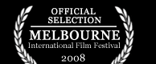
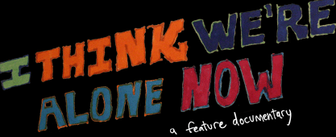

"..I thought that it lent the film a unique honesty, that I don't think you see in a lot of other documentaries."Josh Slates, NPR
"...While it's easy to focus on the pair's troubling obsessions, Donnelly's project is more of a story of unrequited love."Rolling Stone
"The film is a fascinating look at celebrity obsession from the point of view of the obsessed..."Chicago Tribune
★★★★Film Threat